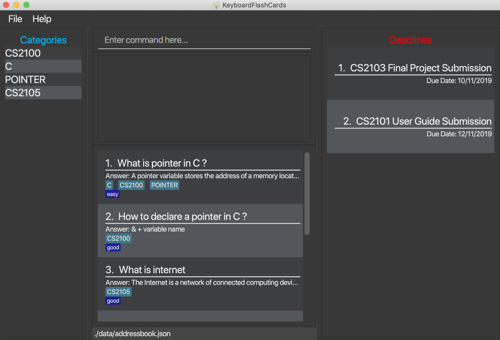

By: CS2103T-T12-4 Since: Aug 2019 Licence: -
- 1. Introduction
- 2. Quick Start
- 3. Features
- 3.1. Start flashcard test:
start - 3.2. Add new category:
cat [name] - 3.3. Add new flashcard:
add [category] - 3.4. Edit an existing flashcard:
edit [category] [ID] - 3.5. Delete entire topic:
delete [category] - 3.6. Get the full list of commands:
help - 3.7. Search flashcards:
search [keywords] - 3.8. Stop test:
stop - 3.9. Exit:
exit - 3.10. View overall stats:
stats - 3.11. Cycle through color themes:
theme[coming in v2.0] - 3.12. Exiting the program :
exit - 3.13. Saving the data
- 3.1. Start flashcard test:
- 4. FAQ
- 5. Command Summary
1. Introduction
KeyboardFlashCards (KFC) is for those who prefer to use a desktop app to study using flashcards. More importantly, KFC is optimized for those who prefer to work with a Command Line Interface (CLI) while still having the benefits of a Graphical User Interface (GUI). If you can type fast, KFC can get your flash card management tasks faster than traditional GUI apps. Interested? Jump to the Section 2, “Quick Start” to get started. Enjoy!
2. Quick Start
-
Ensure you have Java 11 or above installed in your Computer.
-
Download the latest build keyboardflashcards.jar here.
-
Copy the file to the folder you want to use as the home folder for your KFC app.
-
Double-click the file to start the app. The GUI should appear in a few seconds.

3. Features
Command Format
-
Words in
UPPER_CASEare the parameters to be supplied by the user e.g. inadd n/NAME,NAMEis a parameter which can be used asadd n/John Doe. -
Items in square brackets are optional e.g
n/NAME [t/TAG]can be used asn/John Doe t/friendor asn/John Doe. -
Items with
… after them can be used multiple times including zero times e.g.[t/TAG]…can be used ast/friend,t/friend t/familyetc. -
Parameters can be in any order e.g. if the command specifies
n/NAME p/PHONE_NUMBER,p/PHONE_NUMBER n/NAMEis also acceptable.
3.1. Start flashcard test: start
Starts the flashcard test (assuming you are in the category ‘folder’)
start
Starts the flashcard test from any specific category
start [category]
3.2. Add new category: cat [name]
| A person can have any number of categories (including 0) |
3.3. Add new flashcard: add [category]
Adds a new flashcard into your specific category/topic.
add Math
Fill in the question and answer on the card when prompted on the GUI.
3.4. Edit an existing flashcard: edit [category] [ID]
Lists all the flashcards under the specific topic folder.
edit Math 10
3.5. Delete entire topic: delete [category]
delete Math *
Set a reminder for a specific category of flashcards.
remind Math 04/11 1030
=== List function topics and flashcards: list [category]
Lists all the flashcards under the specific topic folder. Each flashcard is color-coded to represent your familiarity with the content.
list Math
3.7. Search flashcards: search [keywords]
search process
3.8. Stop test: stop
stop
3.9. Exit: exit
exit
3.12. Exiting the program : exit
Exits the program.
exit
3.13. Saving the data
Flashcard data are saved in the hard disk automatically after any command that changes the data.
There is no need to save manually.
4. FAQ
Q: How will the program know the correct answer to the questions?
A: You have to key in the answer manually when you create the question - it’s similar to a real set of flashcards.
Q: How does the reminder system work?
A: You select a category and a date, and the program will remind you to revise that category when the date comes.
Q: How will the program know if my answer is good or bad?
A: It doesn’t know - you have to decide for yourself whether you are satisfied with your answer.
Q: Will I be able to resume the test from where I left off after I have stopped?
A: No. The program does not support that.
Q: Can I undo the commands that I have entered?
A: No. However, a confirmation will be displayed before any potentially-hard-to-reverse actions are done.
Q: Can I change the category of a flashcard?
A: Yes, it will be one of the fields you can change when you edit the flashcard. Do note that after you change the category, you will have to refer to it using its new category and ID.
Q: Can I use my mouse to interact with the user interface?
A: Yes, but only to a very small extent, like closing the window. This application is targeted primarily at keyboard users.
Q: What if I forget the format of a command’s arguments?
A: Don’t worry! You will be shown the expected format once you have keyed in the whole command.
Q: Is there an autocomplete functionality?
A: Yes, you can press Tab to use this feature.
5. Command Summary
-
Start a certain topic of flashcards -
start [keyword]
e.g.start Mathematics -
Add a new (empty) category -
cat [name]
e.g.cat Math -
Add a new flashcard -
add [category]
e.g.add Math -
Edit an existing flashcard -
edit [category] [ID]
e.g.edit Math 10 -
Delete an existing flashcard -
delete [category] [ID]
e.g.delete Math 10 -
Delete an entire category -
delete [category]
e.g.delete Math * -
Set user preference for reminders -
remind [category] DD/MM HHmm
e.g.remind Math 04/10 1230 -
List all flashcards under a specific category -
list [category]
e.g.list Math -
Get full list of commands -
help
e.g.help -
Search specific flashcards -
search [keywords]
e.g.search UML diagrams -
Stop flashcard test -
stop -
Exit -
exit -
View overall statistics -
stats